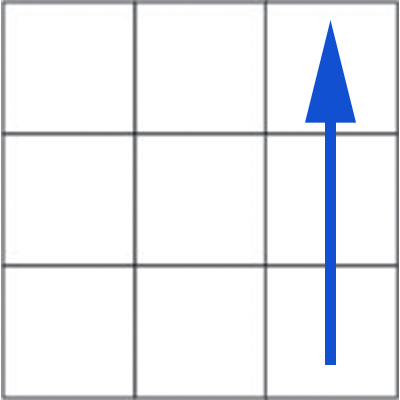
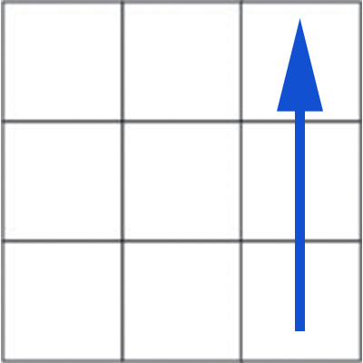
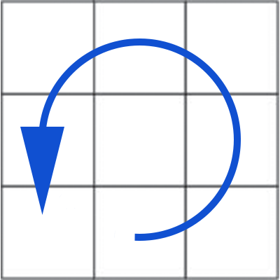
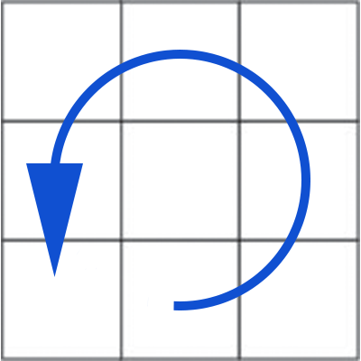
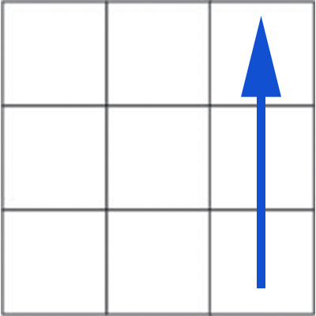
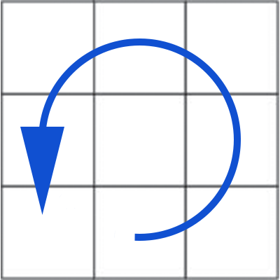
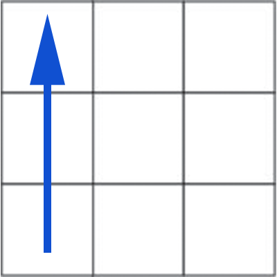

F2L Right
To place the top edge into the right edge position.
 


 


U R U' R' U' F' U F
Starting here, we will need to use algorithms to solve the remainder of the cube. So, if you don't feel comfortable with the notation yet, we recommend checking the cube basics page. This step is called F2L which stands for first two layers. There are two symetric algorithms that we will use to solve this. They will be referred to as F2L Right and F2L Left. These algorithms will move the edge located at the top middle on the front face to the front right and front left positions respectively. You will want to aline top middle edge so that the color of that edge that is visible on the front face matches the color of the face. Then you will use the following algorithms.
To place the top edge into the right edge position.


U R U' R' U' F' U F
To place the top edge into the left edge position.


U' L' U L U F U' F'
If there is an edge piece that is in the correct position but oriented incorrectly, you can use either of these algorithms twice to rotate it to the correct position.